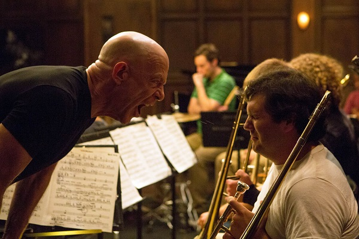

Tues,October 23, 2014
Whiplash opened in a limited release in the United States in six theaters and grossed $135,388, averaging $22,565 per theater and ranking #34 at the box office. The film expanded wider and has earned $6,671,000 domestically and $901,092 in other territories for a total gross of $7,572,092, above its $3.3 million production budget.
Mon, December 15, 2014
Whiplash received critical acclaim upon its premiere on the opening night of the 2014 Sundance Film Festival, with Simmons' performance receiving universal praise. The film has a "certified fresh" score of 95% on Rotten Tomatoes, based on 237 reviews, with an average rating of 8.6 out of 10. The critical consensus states, "Intense, inspiring, and well-acted, Whiplash is a brilliant sophomore effort from director Damien Chazelle and a riveting vehicle for stars J. K. Simmons and Miles Teller."[14] On Metacritic the film has a score of 88 out of 100, based on 49 critics, indicating "critical acclaim".
Wed, February 16, 2015
J.K. Simmons is nominated for the Academy Award for Best Supporting Actor. Peter Debruge, in his review for Variety, said that the film "demolishes the cliches of the musical-prodigy genre, investing the traditionally polite stages and rehearsal studios of a topnotch conservatory with all the psychological intensity of a battlefield or sports arena."[18] Todd McCarthy of The Hollywood Reporterpraised the performances of Teller and Simmons, writing: "Teller, who greatly impressed in last year’s Sundance entry The Spectacular Now, does so again in a performance that is more often simmering than volatile ... Simmons has the great good fortune for a character actor to have here found a co-lead part he can really run with, which is what he excitingly does with a man who is profane, way out of bounds and, like many a good villain, utterly compelling."
Fri, February 22, 2015
Amber Wilkinson from Telegraph praised the direction and editing, writing: "Chazelle's film has a sharp and gripping rhythm, with shots, beautifully edited by Tom Cross (Crazy Heart, Wrong Turn), often cutting to the crash of Andrew's drums." James Rocchi of Indiewire gave a positive review and said, "Whiplash is...full of bravado and swagger, uncompromising where it needs to be, informed by great performances and patient with both its characters and the things that matter to them." Henry Barnes from The Guardian gave the film a positive review, calling it a rare film "about music that professes its love for the music and its characters equally."